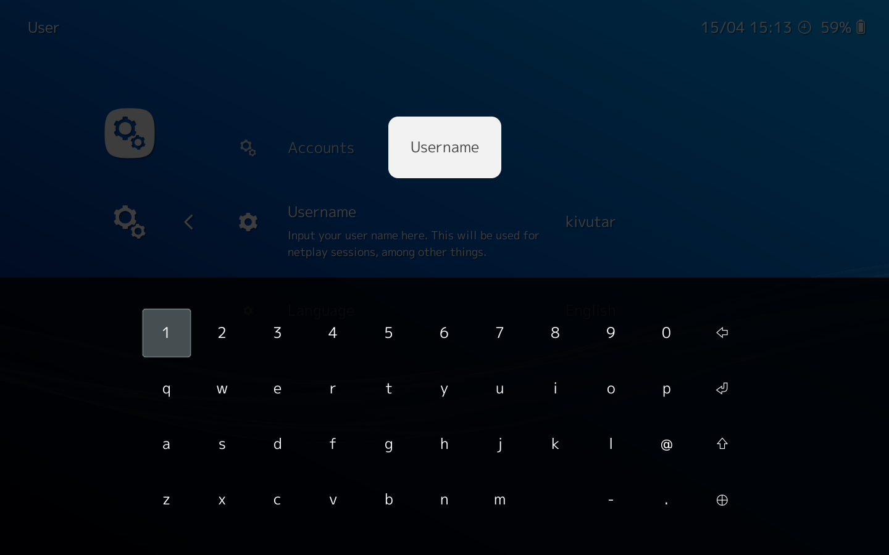
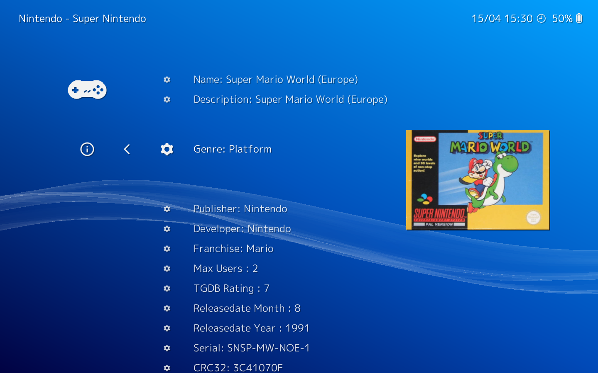

XMB is the default graphical interface of RetroArch. It is optimized for joypad navigation and can be extended using a playlist system. You can use it to browse your game collection with metadata and thumbnails. It also allows to tweak the settings and to perform actions on the active game.

When you launch RetroArch for the first time, the interface looks like this. There are 8 tabs:
In Main Menu->Online Updater you can download and update all the required or optional components for RetroArch.
This includes:


In RetroArch XMB, the joypad is the prefered way to navigate. You can perform every action using the pad, like launching games or triggering the menu from the active game.
When you need to type text in the settings interface, and multilanguage On Screen Keyboard will be displayed to let you type words and passwords.
The menu has been designed as an immersive experience: you will not have to switch from your joypad to your keyboard to perform actions using the menu while your game keeps playing in the background.
You can add new tabs to XMB by scanning your game collection and creating playlists. Games will be sorter per system. You can also write playlist manually to display a list of your favorite games, or any list you can think of.
Playlist entries can be associated to a database entry to display the metadata of the game: Release Year, Genre, Developer, Number of Players, etc.


Thumbnails, dynamic backgrounds, shadows, animated backgrounds, icon themes.